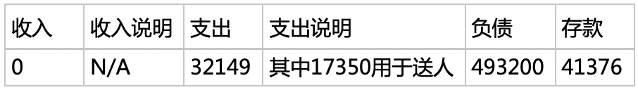

西溪对作为一个爱好用心交流的人类，在创业之前，我决定和自己好好聊聊。 Q：能做到本次对话全程保持正经吗？ A： 只要你能正经。 Q：我们先做一次“快问快答”，必须不假思索。随后我会拿最棘手的问题拷问你，不许闪烁其辞。 A：开始吧。 快问快答Q：什么方向？ A：分布式存储。 Q：什么形式？ A：开源一个核。可以外挂块，文件，对象，流。 Q：优势？ A：任何情况都敢说实话。 Q：关于什么的实话？ A：任何方面。 Q：先说说产品。 A：明确下限，粒度从代码块到配置到API到整体特性。 Q：为什么是优势？ A：下限太高。 Q：很自信。举个例子？ A：存不了海量文件，也不能无限水平拓展。 Q：没听说过这么差的。 A：在 10PB usable storage 的规模下，至多可容纳 2.694 万亿的对象。 Q：再说一个明确下限的好处？ A：给定制化指明了方向。 Q：定制化最大的好处在哪？ A：效率。 Q：为什么要说实话？ A：消灭信息不对称，提高效率。 Q：为什么敢说实话？ A：自信；相信客户的判断力；相信合作伙伴的判断力。 Q：存储生意的本质是什么？ A：信任。 Q：如何建立信任？ A：坚定一个信念。。 Q：什么信念？ A：尽可能的消灭信息不对称。 Q：除了产品还有哪些信息要透明？举几个例子。 A：包括最敏感的信息，诸如从第一天起就必须公开：公司财务与股权结构，人员构成与职责，具体到个人的薪资与股份， 已经失败的计划等。 Q：你很大胆。 A：这不是意气用事。这是提高效率最简单，也是最有效的两条方法之一。 Q：还有哪一条？ A：下一个问题。 Q：如果产品有优势，没必要这样做。 A：错。产品优势是暂时的。必须有一个永恒的内核。 Q：我很少见别人这么干。 A：向来如此，便是对吗？ Q：融资情况如何？ A：愿者上钩。 Q：有多少员工？ A：我和你。 Q：准备如何求贤？ A：四顾茅庐。 Q：拿到钱的第一件事是什么？ A：四顾茅庐。 Q：为什么多了一顾？ A：备帝世之胄，信义著于四海。我只是山野村夫。 Q：上一次尿床是什么时候？ A：具体几岁不明，梦见起床如厕，画面之清晰记忆犹新。睡前看了《成长的烦恼》。 拷问Q：凭什么是你来讲这个故事？ A：我不得不谦虚的讲，舍我其谁？ 我时常拿创业四十年从未成功的父亲，“色厉胆薄，好谋无断；干大事而惜身，见小利而忘命”的袁绍， “匹夫之勇，妇人之仁”的项羽当镜子照。自带魏征，这是唐宗。 从销售开始，做过技术支持，售前，实施，又在多家公司负责存储研发。全能战士，这是光武。 坐拥“恐怖分子”绰号数年。地痞流氓，这是汉祖。 集唐宗，光武，汉祖于一身。敢问，还有谁？ Q：我不服你刚才“在 10PB usable storage 的规模下，至多可容纳 2.694 万亿的对象”的描述，这离消灭信息不对称似乎还差得远。 A：刚才是快问快答，不便多说。在实际环境中，必须提供详尽解释，包括但不限于：数据关键性描述，数据来源环境，相关参数，关键代码块，扩展阅读等。比如在这个例子中，必须指出这 10PB 属于 Write Buffer 的后端，也就是温数据存储层，其对 I/O 需求大大降低，对成本则更加敏感等背景。本地数据结构的最小存储单元是 4KB，这里假设所有文件大小为 4KB。接下来是本地索引所用的数据结构的描述，以及对集群索引设计的影响。最后指出数据计算方法，以及在该极限情况下，节点/集群的负载情况。这里还有一个原则，任何结果不得假设完美的运行环境。比如这里的要求一级索引（索引到节点）控制在 4GB 以下，二级索引（存储节点中的索引）可无压力加载到 36*8TB存储空间，64GB内存空间的节点上（实际约 9GB的内存开销）。简单的说，不得使用最优结果，数据必须具备广泛适用性。另外，这些信息必须易于获取，互相索引并构成体系，否则取得不了提高效率的结果。 Q：你凭什么能吸引足够多的一流人才？ A：三流的公司必须要一流人才。而能量最大的是这三类人：1.郁郁不得志的 2. 投机分子 3. 郁郁不得志的投机分子。这三类人和被大众划分为几流没有直接的相关性。我最想要这三类人。 Q：为什么说三流的公司必须要一流人才？ A：三流的公司是被资本绑架的公司，只有一流人才才具备如此强大的执行力来完成资本的野心。一流人才也非常适合去三流公司，大多数时候能实现多方共赢。公司如果赚的本满钵满，自然大家日子都美。如果陷入停滞，一流人才通过精明的操盘，锻炼了自己的同时，大家一起收获回报或降低损失。如果公司完蛋，一流人才又不愁下家，再加上三流企业往往是市场上最呼风唤雨的企业，这个背书非常好。 Q：胡说八道。你眼里的三流企业明明非常成功。 A：首先成功只是一个瞬时状态。另外三流的公司也可以有一流的结果，可能公司内有特别小组作为“法外狂徒”提供生命力；领先地位是有惯性的；另外收购，垄断等等资本甚至政治手段也可能起到立竿见影的效果。还有不得不承认的是，一流人才实在太厉害了。 Q：投机分子的能量又怎么理解？ A：投机分子和一般找工作的人相比最大的区别在于野心，而要实现野心必须有巨大的投入。我自己就做过投机分子，当时我去青云之前就十分肯定对方急需我的专项技能。去白山云的时候亦是如此。最终我在白山几乎以燃尽生命的方式在工作，双方都拿到了自己想要的东西。？ Q：我眼里的投机分子是在企业内玩合纵连横的蛀虫。 A：喜欢吃糖就得冒蛀牙的风险，定期刷牙就好。追求完美的纯洁性只会破坏生产，搞得人心惶惶。另外，公司里有不应该存在的利益链条往往是因为老板过于贪婪，除了抱团取暖，大家也没有别的办法。 Q：老板如何不作恶？ A：1. 像恩格斯这样在他爸公司上班的老板可以不作恶。2. 对外宣称自己不作恶。 Q：作为老板如何控制自己的贪欲？ A：不控制，控制的太狠它会报复你。但也不是不作为，我会从这两件事开始： 1. 公开财产。包括收入，支出，支出说明，负债，存款等。如 2019 年 7 月情况如下：  这个表格比较简单，但作为例子够了。所有数据真实有效。 2. 做一件需要长期投入，但尽量远离权利，金钱，美色的事情 我已经有这么一项事业了，与皇叔织草席神似，需要长期积累，全情投入，还能挣两个小钱。萌芽在小学三年级（2000年），正式启动于 2009年11月3日。如果只有一只羊，是很难克制自己不往死了撸的，现在我有两只换着撸了。 Q：关于公开财产有两个疑问，首先，隐私问题。其次，具体意义在哪？ A：生意就是生意，公开财产不是我的执念也不是昏了头。一开始我就说了，存储生意的本质就是信任。你会把钱存在一家账务不明的银行吗？作为互联网创业公司，企业人格和创始人的个人人格在很多方面是交融在一起的，我为了培育信任感，做点小事是非常划算的。对内，也有助于减少猜忌，比如我失信了是因为真的没钱，而不是潇洒掉了。对自己，减少内心的冲突和矛盾。哪怕对胡润和福布斯，他们也减少了工作时间。这个小举动能 100% 提升各个方面的工作效率，何乐而不为？ Q：刚才注意到了对内承诺的问题，你现在能给出的承诺是什么？ A：什么承诺都没有。我建议每一个人在合同生效之前不要相信我的任何允诺。本着公开透明的原则，我这里说下具体的难处：我们先来算笔简单的帐。通常员工的股权池占比在 10%左右，假设老板占 11% 的股份，在这个情况下，员工收益为 1。当老板将 10% 出让给员工，即老板占 1%，员工占 20%，员工收益为 2。考虑到为了最大化效率和产出，不得不降低工作时长，那么这个收益相较于其他同等规模的公司可能会到 3 甚至是 4。那么会有如下三个问题： 1. 占 1%时，控制权的保留 2. 在期权近乎于欺诈的现状下，合理的让人有信心的机制设计 在以上两点满足的同时不影响流通性 Q：负债不少。 A：“中山大商张世平、苏双等赀累千金，贩马周旋于涿郡，见而异之，乃多与之金财。”有人白送贩履织席的刘备，自然也有人赞助山野村夫的我，这不是问题。 Q：现在你必须告诉我提高效率的另一个法门是什么了。 A：以人为本。真正做到这点很难，可以从不把人当畜牲（比如狼），不把人当零件（比如满嘴可替代性），不把人当资源（Human Resource）开始。不过，不是每一种生意都可以把人当人的，比如违法的生意，不违法的就是近似于搬砖的工作。所幸，分布式存储和搬砖的相似度比较低。 Q：说实话难道不会影响销售业绩吗？公司提供的数据甚至比客户的招标要求还要丰富且苛刻，有必要吗？ A：这是个很好的问题，但也很大。前期销售不利对于一家初出茅庐的企业来说影响非常大，对内伤士气，对外影响投资人的信心，由于没有钱，公司也就死掉了。但这个逻辑有两个错误的前提：1. 大大低估了销售工作的复杂性 2. 大大低估了投资人的判断力。 纯技术出身的创始人往往会低估或者高估销售的影响力，本质是对销售工作复杂性的认识不足。有时我们会看到相对劣质的产品获得了订单，通常这都是产品之外的因素促成的交易，所以实话与否并不影响此类交易的达成。 2B 是门非常烧钱的生意，这就造成了一个有趣的现象——企业有时候简直不像在真正做生意，而是在讨好资方。强推稚嫩的产品，讲新故事，盲目扩招，饮鸠止渴的促销等行为到底是做给人看的还是真实的需要呢？这些把戏玩了这么多年，难道还需要我再来一次吗？ Q：说说吧，怎么赚钱？ A：我在一个成熟的行业里用着成熟的商业模式，原则上没有什么秘密。当然，这不是说没有独门诀窍了，行走江湖的生意人怎么会没有自己的生意经呢？不过，生意经本身就是最大的生意。如果想知道，请付费。 Q：创业的私心是什么？ A：千里马常有，而伯乐不常有。我不仅想做伯乐，还想做跑马场，做大草原。 Q：为什么选择在如此早期的阶段和盘托出？ A：为了更好的接受监督。未来公司内会有人充当魏征的角色，他时刻关心如下三个问题： 1. 有没有尽力消灭信息不对称 2. 有没有尊重“创造性是人的本质”这一真理 3. 有没有合理分配 一旦我没有做到，他必须站出来竭尽全力的批评我。私下的，公开的都可以。 Q：我还有很多疑惑，但时候不早了。最后一个问题：你现在最想说什么？ A：滚滚长江东逝水， 浪花淘尽英雄。 是非成败转头空。 青山依旧在， 几度夕阳红。 白发渔樵江渚上， 惯看秋月春风。 一壶浊酒喜相逢。 古今多少事， 都付笑谈中。 |